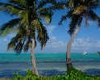
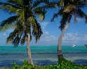
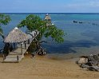
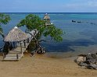
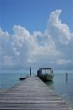
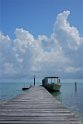
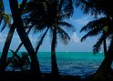

 12/30/08 12:18 PM
 12/30/08 12:18 PMModel: DMC-TZ5
focalLength35mm: 28.0mm
meteringMode: Spot
isoEquivalent: 100
exposureTime: 1/500s
aperture: 8.0
Exposure Bias Value: 0 EV
Exposure Program: Program normal
White Balance: Auto white balance
flash: noFlash
resolution: 2610 x 2088
">


  4/23/09 4:14 AM
 4/23/09 4:14 AMModel: DMC-TZ5
focalLength35mm: 29.8mm
meteringMode: Spot
isoEquivalent: 100
exposureTime: 1/320s
aperture: 8.0
Exposure Bias Value: -33/100 EV
Exposure Program: Program normal
White Balance: Auto white balance
flash: noFlash
resolution: 2591 x 2073
">
 11/21/09 3:27 PM
11/21/09 3:27 PMModel: DMC-LC33
focalLength35mm: 69.9mm
meteringMode: Spot
isoEquivalent: 50
exposureTime: 1/160s
Aperture Value: f/11.3
Exposure Bias Value: 0 EV
Exposure Program: Program normal
White Balance: Auto white balance
flash: noFlash
resolution: 1827 x 1462
"> 11/21/11 1:27 PM
Model: DMC-GF1
focalLength35mm: 41.0mm
meteringMode: Multi-segment
isoEquivalent: 100
exposureTime: 1/800s
aperture: 4.5
Exposure Bias Value: -33/100 EV
Exposure Program: Landscape mode
White Balance: Auto white balance
flash: noFlash
resolution: 2878 x 2225
">
  11/19/11 10:56 AM
 11/19/11 10:56 AMModel: DMC-GF1
focalLength35mm: 43.0mm
meteringMode: Spot
isoEquivalent: 200
exposureTime: 1/160s
aperture: 16.0
Exposure Bias Value: 0 EV
Exposure Program: Manual control
White Balance: Auto white balance
flash: noFlash
resolution: 2103 x 3155
"> 12/30/08 12:15 PM
Model: DMC-TZ5
focalLength35mm: 35.7mm
meteringMode: Spot
isoEquivalent: 100
exposureTime: 1/400s
aperture: 9.0
Exposure Bias Value: 0 EV
Exposure Program: Program normal
White Balance: Auto white balance
flash: noFlash
resolution: 2677 x 1912
"> 12/26/08 2:39 PM
Model: DMC-TZ5
focalLength35mm: 150.1mm
meteringMode: Spot
isoEquivalent: 100
exposureTime: 1/250s
aperture: 11.0
Exposure Bias Value: -33/100 EV
Exposure Program: Program normal
White Balance: Auto white balance
flash: noFlash
resolution: 2202 x 1702
">